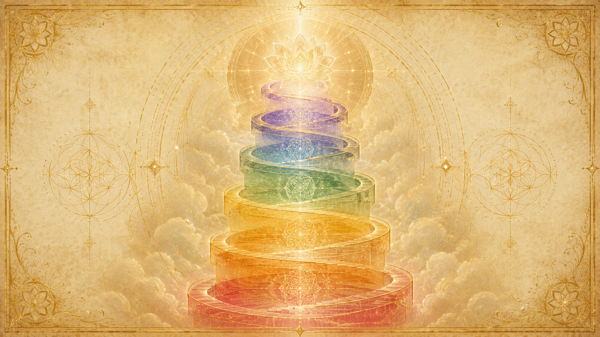
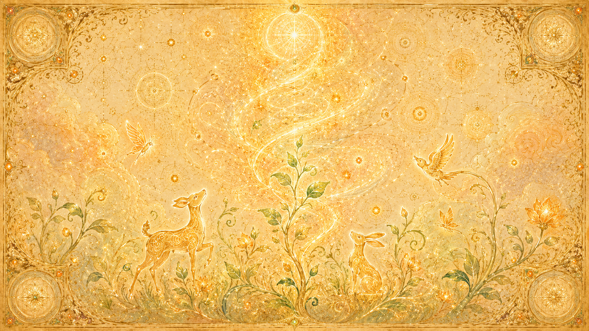
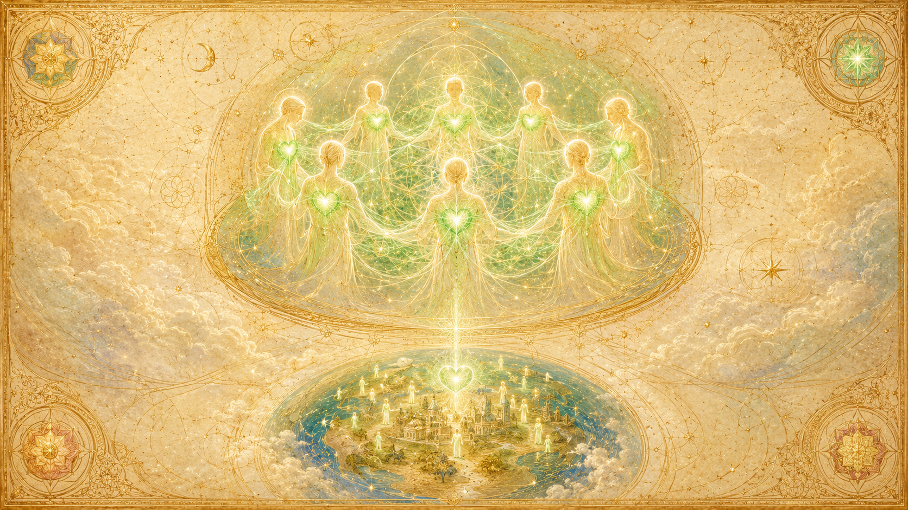
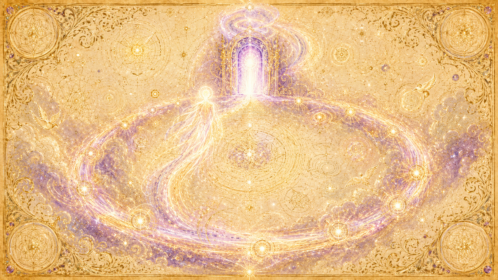

先把「密度」這個概念講清楚

密度是什麼:最好的比喻是音樂的八度
「密度」這個詞,Ra 說它本質上是個數學性的概念,最接近的類比是音樂的八度音階:在西式音階上走完七個音之後,第八個音就開啟一個新的八度——既是這一輪的結束,也是下一輪的起點。所以整個宇宙可以看成一個「存在的大八度」,由七個密度依序組成,而我們每個人都走在這條從第一密度往上爬的路上。
而且這不是七層平放並排而已。每一個密度裡面又包含七個次密度,每個次密度裡面再含七個次次密度,如此無限地往下分。換句話說,它是一個七進位、層層自我相似的結構。Ra 也說,就祂有限的所知,「八度之道是無時間的」——每一個造物裡都有七個密度,無限地皆是如此。
七種顏色,對應七個密度
底下這七個顏色,就是第一到第七密度依序對應的振動;它們同時也對應人體的七個能量中心(脈輪)。Ra 把顏色描述成密度與密度之間的「邊界」或「振動的階梯」:每個邊界之內有無限的顏色漸層,但一個存有要從一個邊界跨到下一個,必須付出努力才跨得過去。
推動演進的,是「向上盤旋的光」
讓意識在密度之間往上走的動力,是一種螺旋狀前進的光。光沿著直線的螺旋運動,天生帶著一個「無可避免的向上向量」,讓每個存有不停地朝更深的理解、朝那無限的造物者前進。各個能量中心也是由低到高逐步被精煉:第三密度具備所有中心「最低限度啟動」的潛能,第四到第六密度精煉較高的中心,第七密度則是「完成的密度,轉向無時間性、永恆性」。
為什麼我們看不到更高的密度?
Ra 說,這個八度裡所有的密度,本來都應該是清楚可見的——只是第四到第七密度「自由地選擇不被看見」。所以看不到它們,不是因為有什麼物理屏障擋著,而是那些存有出於自由意志,選擇不對我們顯現。
覺知的開端
「Logos 於是運作。光來,為黑暗賦形……」
一切始於混沌
第一密度始於 Ra 所稱的「混沌」——一種沒有方向、隨機的無限能量。接著,用我們能理解的話來說「緩慢地」,一個「自我覺知的焦點」逐漸成形,造物之神(Logos)於是開始運作。緊接著的關鍵動作,是「光前來為黑暗賦形」,依照共同造物者的圖樣與振動節律,建構出某一種特定型態的經驗。一切由此開始。
意識的密度:礦物與水,向火與風學習「存在」
Ra 給第一密度下的定義是「意識的密度」:行星上的礦物生命與水的生命,從火與風那裡,學習最初步的「存在的覺知」。當被問到這顆行星最初的實體源頭時,Ra 的回答直接指向四大元素本身——「最初的實體,是水、火、風與土」。
祂進一步說明這套教學機制:在那「無時間的狀態」裡,土與水原本是無形的;火與風是「主動的原理」,熾烈地吹拂、燃燒,字面意義上「照亮並為無形者賦形」。於是,水學會成為海、湖與河,土學會被塑形——兩者都因此「提供了可存活生命的機會」。
從能量看:漩渦、旋轉的光、向上的螺旋
從能量的角度,第一密度是由旋轉的能量漩渦,讓光凝結成物質而形成的。而它之所以會「往上」走,是因為光的本質是螺旋能量,沿著直線螺旋運動,帶著一個無可避免的向上向量,朝更全面的存在前進——於是第一密度自然朝向第二密度「包含成長、而非消解或隨機變化」的課題努力。值得一提的是,造物之神在進入時空之前,就已把整個八度所有密度的計畫以「潛在完成態」備齊了,因此能量中心在它們顯現之前就已經存在。混沌只是尚未被導向的起點,而不是一場隨機的偶然。
成長與趨光
「就像葉子朝著光源奮力生長一樣。」

核心是「運動」與「成長」
第二密度是較高等植物與動物生命的密度,這種生命存在著,但還缺乏那股「朝向無限的向上驅力」。它與第一密度最大的差別在於「運動」:第二密度的存有會在自身之上、之內移動,並天生帶著一股朝向光與成長的奮力。Ra 舉的例子很簡單——就像葉子總是朝著光源的方向生長。這股動力來自「向上螺旋之光的吸引」,而且「這當中沒有任何隨機的成分」。
能量中心:紅 → 橙 → 黃逐一顯現
當振動朝橙光移動,化學物質開始結合,「愛與光開始發揮成長的功能」(例如單細胞的渦鞭毛藻)。第一個同時具備橙光與黃光的最簡單存有,是那些「需要靠雙性繁殖、或必須依賴其他存有才能生存」的動物與植物。事實上,第二密度的動物已經潛在地具備全部的能量中心,只是還沒有被啟動。
多元的演化路徑
大約在七萬五千年前之前,地球上就有第二密度的存有;其中較高層級的已經有了雙足的形態,但還沒完全達成我們這種直立的姿態。Ra 也說,要理解為何曾有雙足存有與恐龍共存,就要想想「自由意志如何作用於演化」——不同的心/身複合體會循著不同路徑求生與成長,這兩種只是眾多競技場中的其中兩種。
如何提升到第三密度:「被賦予一個身分」
當較高等的第二密度生命被第三密度的存有「賦予了一個身分」、開始有了自我覺察,它就成為心/身複合體,進而轉化為心/身/靈複合體,正式進入第三密度。Ra 把這比喻為「穿上一件衣袍」:被第三密度存有所愛、所關注的寵物,或被人類擬人化、向其發送愛的自然存有,都是這樣被拉升上來的。
能被這樣「賦予靈性」的有三種,由多到少是:動物(最普遍)、植物(尤其是能給予並接收足夠的愛而個體化的「樹」)、礦物(最罕見)。Ra 也校正過一個說法:存有並不是「被注入」靈性,而是「覺察到那早已存在於每個細胞、每個原子之內的智能能量」——是一股朝向自我最終實現的、無可避免的拉力。
抉擇的密度
「第三密度是一個抉擇——是整個造物所環繞旋轉的軸心。」
靈之意識的第一個密度
第三密度是「靈之意識的第一個密度」。當「靈」加入,存有第一次成為完整的心/身/靈複合體,也第一次擁有自我覺察。我們所居住的地球,在其存有上是第三密度;但它所在的時空連續體本身已經是第四密度——這種錯位,正造成「一場相當困難的收穫」。行星的過渡像「時鐘整點報時」一樣規律地到來;問題出在人類自己:思想形態散布在整個光譜上,無法一起「抓住羅盤的指針、指向同一個方向」,使得愛(也就是理解)的振動在當前社會中尚未生效,因此「許多人會重複第三密度的循環」。
為何如此短,卻如此關鍵:它是「抉擇」
相較於其他密度,第三密度短得像「一眨眼、一彈指」。為什麼?Ra 給了全書最簡潔的一句:「第三密度是一個抉擇。」它的功能就是奠定這個幻象、讓存有做出選擇;其餘的密度則是對這個抉擇「持續不斷的精煉」,並且被大大地延長。這個抉擇是「片刻之功」,卻是「整個造物所環繞旋轉的軸心」。
而抉擇的內容,就是兩極化:選擇走「服務他人」或「服務自己」。Ra 說,這個兩極化的選擇,正是第三密度「可以被收穫」的必要條件;而更高密度全部的工作,都建立在這裡所累積的極性之上。
唯一「在火中鍛造」的密度
提問者問,這個抉擇是不是為了讓後面的密度更強烈。Ra 說不是,並用雕刻來比喻區分:第四密度是對一座粗胚雕像的「精修」;但「在第三密度,這座雕像是在火中被鍛造出來的」——這種強度,不屬於第四、五、六、七任何一個密度。這正是第三密度既關鍵又如此艱苦的原因。
功課恆定:學習愛的種種方式
第三密度投生的目的,是「學習愛的種種方式」,而這份功課的核心,是與「其他自我」之間的關係。Ra 強調這功課的本質恆定不變,無論存有是什麼形態、處在什麼時代,機制都一樣——「造物者將從自身學習」。這也凸顯了「面紗(遺忘)」的設計用意:在面紗出現之前、沒有遺忘的時代,學習速度極慢,Ra 形容是「烏龜對獵豹」。而每一次投生都是「造物者認識自己的一門課程」;死後的回顧不是來「旁聽」,而是一場測驗——把這一生所學的精華蒸餾出來,再選擇下一次投生的條件。
為何是直立兩足、有對生拇指的人形?
Ra 推測(並強調這只是意見):本造物之神選擇直立兩足的猿形,是為了讓「言語」凌駕於心電感應之上、用「對生的拇指」把存有導向製作與使用工具,藉此強化遺忘的面紗——讓人不靠心智的天賦、而是靠摸索與工具去學習。祂也說,我們經驗到的戰爭並不是被刻意規劃的,而是「抓握的拇指 → 製造工具 → 表達敵意」這條鏈意外的副產品;造物之神真正的設計,是讓第三密度擁有「最大可能的兩極化機會」。
愛與理解
「一個對第三密度的種種悲傷,懷抱慈悲與理解的層面。」

愛或理解的密度
第四密度是「愛或理解」的密度,而且正向(服務他人)與負向(服務自己)這兩條道路共用同一個名字——因為「無論愛是朝向自己或朝向他人,本質上是一體的」,差別只在方向。Ra 說第四密度缺乏足以正面描述的語言,只能先說「它不是什麼」:不是由言語構成、沒有沉重的化學身體、沒有自我之內或群體之間的不和諧。再給近似的描述:一具「更為緻密、且更充滿生命力」的雙足載具;彼此能直接覺察對方的念頭與振動(心思幾乎是透明的);對第三密度的悲傷懷抱慈悲與理解;個體差異依然顯著,卻「自動地被群體共識所調和」。
痛苦退場,慈悲登場
身體的疼痛在第四密度幾乎退場,只在一生的尾聲出現一點點(Ra 說那會被稱為「疲憊」);取而代之的主要催化劑,是心智與靈性層面的功課。連「進食」都改變了意義:不再是生存的壓力,而是用「必須暫停服務來進食」這件事,來教導「耐心」。
社會記憶複合體的形成
從第四密度開始,心/身/靈複合體會匯聚成「社會記憶複合體」——每個成員的全部經驗,都對整體開放可用。正向道路的工作,是已經和諧整合了自身的群體「走出去幫助較不正向的存有」,從而生出越來越強烈的慈悲與理解。而當第四密度的振動來臨時,地球會以多重振動的形式存在,紅、橙、綠能量中心被活化;早期的第四密度存有不再維持「對第三密度儀器不可見」的假象,這會使第三密度的行星環境逐漸變得不適合居住。
光與智慧
「同心的存有聚在一起,於光與智慧中合而為一。」
把愛精煉成智慧
第五密度是「光的密度,或智慧的密度」,具有「極為純白的振動」。Ra 用「融合」來描述這段進程:第四密度先學會慈悲,第五密度把這份慈悲融入智慧,第六密度再把智慧融回對慈悲的統一理解。也就是說,第五密度不是拋棄愛,而是讓愛經過智慧的洗煉而變得更純。
收割的條件變了
要進入第五密度,存有的振動必須「有意識地接受『一的法則』所帶來的榮耀與責任」——這份責任與榮耀,正是這個振動的根基,不再只是無意識地隨波前進。而且原理也與第三密度不同:在第五密度的收割中,「極化與可收割性幾乎無關」。
食物成為「慰藉」
第五密度仍然需要養分,但食物是「用念頭準備」出來的,被形容成花蜜、瓊漿,或一種「金白色調的清淡光湯」。它的意義不再是催化學習,而是「慰藉」:心靈相契的存有聚在一起共享這道光湯,在光與智慧中合而為一、心手相連。
孤獨、純念頭的存在
第五密度的存有高度依賴念頭而非外在的科技,以念頭旅行。負面取向的第五密度存有尤其顯出孤立的特性:Ra 形容他們「極度地壓縮緊實,並與其他一切分離」,除了藉念頭之外已停止活動。能呈現「酷似人類」外形、混跡其中而不被察覺的存有,也多半是第五密度的。第四、第五密度這兩條道路仍可以各自獨立運作、互不需要——要到第六密度才被迫整合。
合一:愛與智慧的統合
「我們已『成為』光……如今無極性地尋求。」
把愛與智慧重新熔回一體
第六密度的核心課題,是把第三、四密度的「愛/慈悲」與第五密度的「智慧」重新調和、平衡為一。Ra 以第一人稱描述自己這個密度的修行,就是在「慈悲與智慧之間」進行平衡;一個存有可能智慧充沛,卻仍須補上慈悲,尤其是「對自我的慈悲」。
成為共同造物者,創造恆星
到了第六密度,存有逐漸成為與無限造物者愈來愈接近的「共同造物者」。祂們的創造力大到什麼程度?Ra 說某些第六密度存有透過類似「融合」的機制繁衍,可以選擇在「太陽體」之中作為經驗的一部分——我們所接收到的部分光,可以說是「第六密度之愛的生成表現之後代」。換句話說,陽光是第六密度之愛的子嗣。而這個密度自身的食物,本質也是光,無法用對我們有意義的方式描述。
傳訊者 Ra 自己,就站在這裡
Ra 自述是一個來自金星的社會記憶複合體,在第六維度時的物質形體「是你們會稱為金色的」。祂描述自己現在的存在狀態:「與其用光把自己包圍,我們已經『成為』光」;「我們如今無極性地尋求,不從外界召喚任何力量,因為尋求已經內化」。理解這一點很關鍵——整本教材的視角,本來就是從第六密度回望第三密度的我們。
正負兩極在此合流
這是第六密度最重要的轉折:負面(服務自己)的道路可以一路走到第五密度、甚至第六密度的初期,但要繼續往合一前進,「分離」這一招就走不通了。智慧到此必須與等量的愛相匹配,而這種愛/光在負面道路上極難在合一中達成;因此到了第六密度早期,負面取向者通常會「選擇釋放他們的負面潛能」、轉回正向,放下分離,才能完成統合而繼續前進。
門戶:返回太一
「第七密度是完成的密度,是轉向無時間性、或永恆性的密度。」

八度的全貌
Ra 把演化描述成一個「存有之圓」,八個循環依序是:覺知、成長、自我覺知、愛/理解、光/智慧、合一,然後是第七密度的「門戶循環」,最後進入的那個八度,則「移入一個連我們(Ra)也無法測度的奧秘」。早在第六密度的後段,存有就已經開始「尋求門戶密度的經驗」,朝第七密度傾斜。
完成、收聚、不再回望
第七密度被定位為「完成的密度,轉向無時間性、永恆性」。Ra 說,在第七密度被充分進入之後,心/身/靈複合體變得如此徹底地成為一個整體,以致開始「累積靈性質量」、接近那第八密度——「於是,回望在那一點就結束了。」整個朝向與太一重新合一的方向收束。
終點即起點
第八密度同時就是下一個八度的「第一密度」——在它的後段階段。八度的結構是循環、而不是直線:這個密度既是這一輪八度的盡頭(進入奧秘),又是下一輪全新八度的開端。圓滿之後,新的循環再次展開。